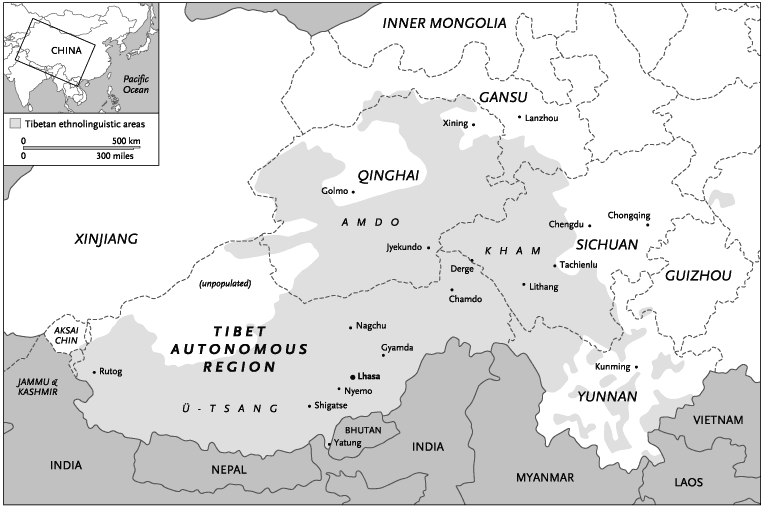
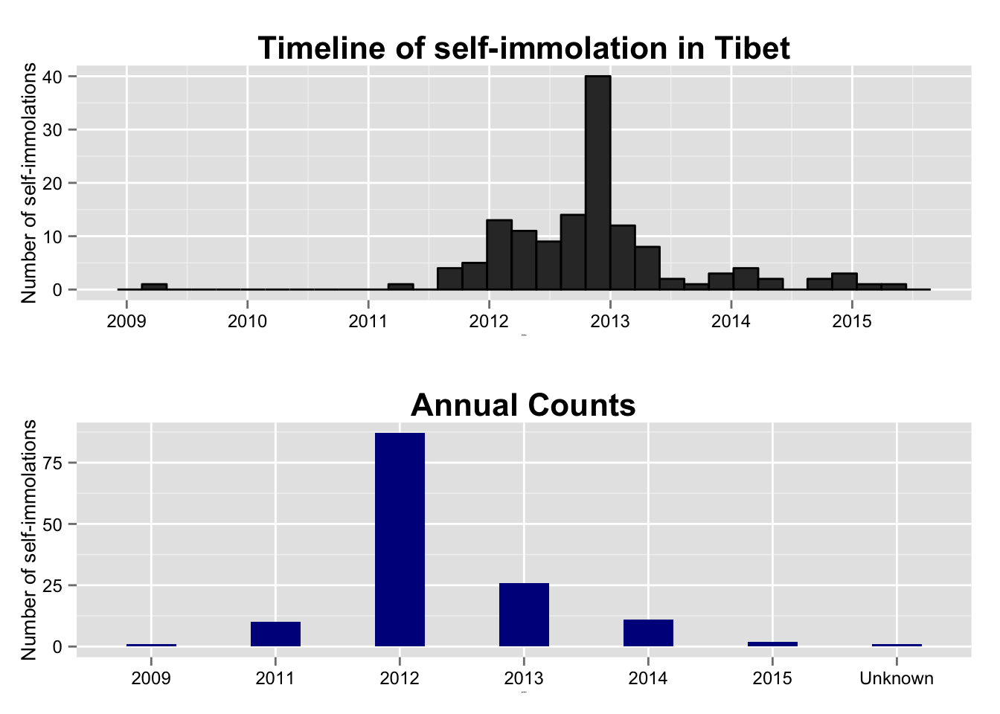
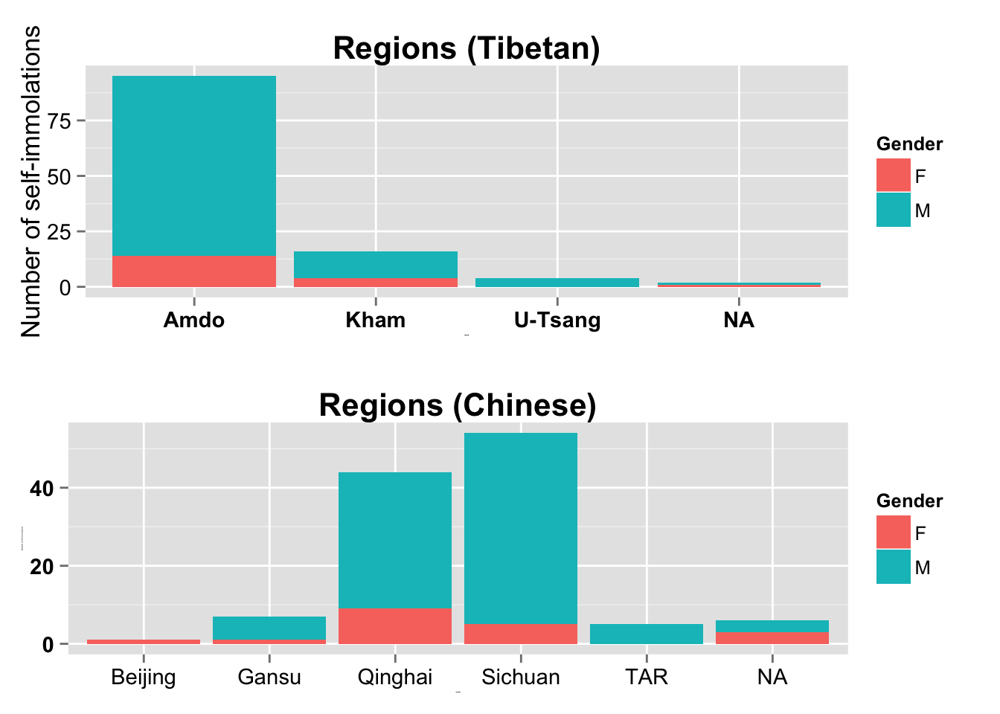

Introduction
A 42-yr-old nun from Kardze County, Yeshi Khando self-immolated today (April 10, 2015). Yeshi's self-immolation is the 138th one in Tibet since 2009. She shouted slogans "calling for the return of the exiled Tibetan leader the Dalai Lama to Tibet [and] freedom in Tibet." [Source] We do not know whether she has survived the self immolation as her body was taken away by the Chinese police.
[Source]
{kind=link}
In February 27, 2009, Lobsang Tashi (Tapey was his lay name), a 20 year old monk from Kirti Monastery became the first Tibetan to self-immolate in Tibet. I recommend reading this post by Woesor at High Peaks Pure Earth on "Remembering the first person who self-immolated inside Tibet."

[Source]
The first Tibetan self-immolation took place in New Delhi, India. Thupten Ngodup, a former monk, was on a hunger strike demanding UN intervention in Tibet. As the days turned into weeks and with no responses, Thupten Ngodup doused himself with gasoline and set himself on fire to die for the cause of Tibetan indepence. He was 60 years old. I highly encourage reading Jamyang Norbu's piece on "Remembering Thupten Ngodup".

Pawo (patriot) Thupten Ngodup [1938-1998]
Before reading further, it is critical to understand Tibet's past and present geography. Tibet has been historically divided into three main regions (U-Tsang, Amdo and Kham). Under the authotarian Chinese regime, Tibet has been split into different regions, mainly Tibet Autonomous Region (TAR), Sichuan and Qinghai. The map below depicts both the past and present-day regions.

Tibet's three main regions along with present day Chinese regions [Source]
{kind=link}
Timeline
The chart below shows the timeline of the self-immolations. The majority of the self-immolations took place in 2012. In fact, there were 87 self-immolations that year, followed by 26 in 2013 and 11 in 2014. There was two this year, the first on March 5 in Ngaba. Her name was Norchuk and she was 40 years old [ICT]. The second was Yeshi Khando as mentioned in the beginning. Why was there a surge in self-immolation in 2012, especially towards the end of that year? I am inclined to agree with Woeser's analysis here. We know that there were 28 self-immolations in November 2012. Woeser mentions that November 2012 was the time of the 18th National Congress of the CCP where they would produce the next generation of Party leaders. Hoping to infuence this new generation of leaders on Tibet policies, nine self-immolations occurred during the eight days of the Party meeting. Woeser comments that the other smaller peak in early 2012 (around March) is due to three events - Tibetan National Uprising Day, commemoration day of people from Ngaba being shot dead in 2008 and the anniversary of "Serf Liberation Day" introduced by the Chinese government in 2009.

Let's make use of the Sunlight Foundation API to see if "Tibet" was discussed in the US Congress during the period of self-immolation.
I avoided the phrase self-immolation because there was only one mention of it in December 2012. The graph below shows us two spikes in 2008 and end of 2012. 2008 was the year of Beijing Olympics. So we can conclude there were some discussions in the US Congress. If you are interested, I have also gathered all the 2012 articles (24 of them) along with their links here.
Regional breakdown
Next, let's look at further into our data and graph the regional and gender breakdown. A quick look at both these breakdowns show the majority were males from the Amdo region. However, it should be noted there were 24 female self-immolations. This number may come as a surprise to some so this might be a good opportunity to introduce Dorje Yudon against China in her region during the 1950s uprising. Carole Mcgranahan captures it her book Arrested Histories: Tibet, The CIA, And Memories Of A Forgotten War. Lhakar Diaries has also posted the book's section here.
Diving into the regions, there were 111 self-immolations in Amdo, 20 in Kham and 4 in U-Tsang. Similarly, there were 68 self-immolations in Sichuan, 48 in Qinghai, 8 in Gansu and 4 in TAR. Note that there were no female self-immolations in U-Tsang (or TAR). 
Depending on information available (it is not easy to get information out of Tibet), we can even look further into these regions. Note that some of these places could be part of a county but I have chosen to show the exact place name where available.

Age breakdown
The age breakdown graph shows the majority of self-immolations in the under-30 demograph. In fact, 24 of them were teenagers ! This means they were born after 1995. 71 of them were under 25 years old and there were 14 older than 40 years old. Note that there were 21 unknown values as we did not have their ages. Also, if you look at the dataset provided, I have taken some liberty to assume a few ages in cases where the age was described as mid-40s or early 30s. The rationale for this modification is it makes it easier to perform any sort of data analysis (continuous value as opposed to a categorical one). So please keep this in mind as you look at the age graphs.

Let's facet the ages according to their regions. This helps us to see the distribution of ages across the three main regions.

Occupation
The occupation breakdown graph is provided below. The largest group here is "Unknown" followed by "Religious ascetic". The religious asectic group includes monks, nuns, former monks and nuns. Note that parent has also been listed as an occupation although any of the other categories (farmer/nomads, layperson etc.) could have been a parent themselves. Both this issue and the high number of "Unknowns" demonstrate the challenges with getting the detailed data from inside Tibet. It is critical we never forget these brave individuals and gathering detailed and accurate information becomes the first step towards achieving that.

Status
The charts below show that most of these brave individuals have died. According to the latest data, 122 have died and there are six unknown cases.


Final Message
I have nothing to add here. I leave you with the final messages of these brave individuals. May their souls rest in peace. Om Mane Padme Hun.
Resources and acknowledgements:
Dataset download (updated as of April 10, 2015) can be downloaded in CSV format here. Thanks to Urgyen, Creative/Canada Director, Students for a Free Tibet for the dataset.